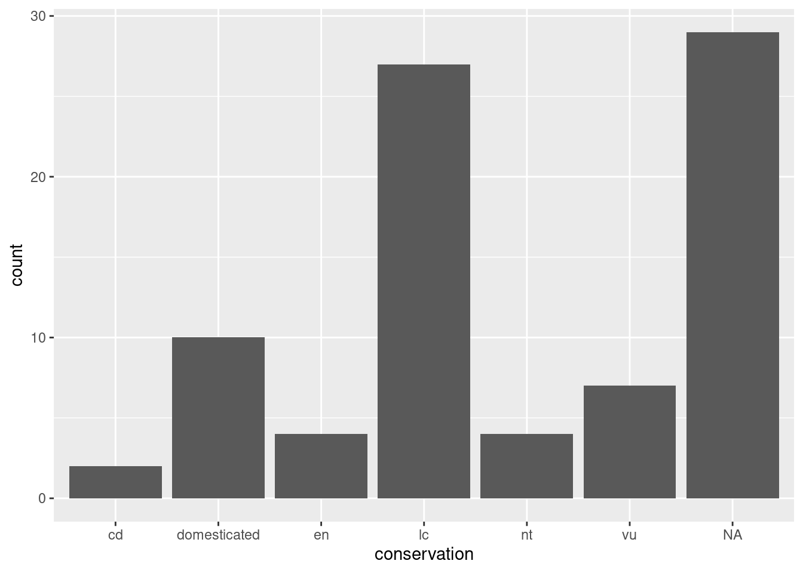
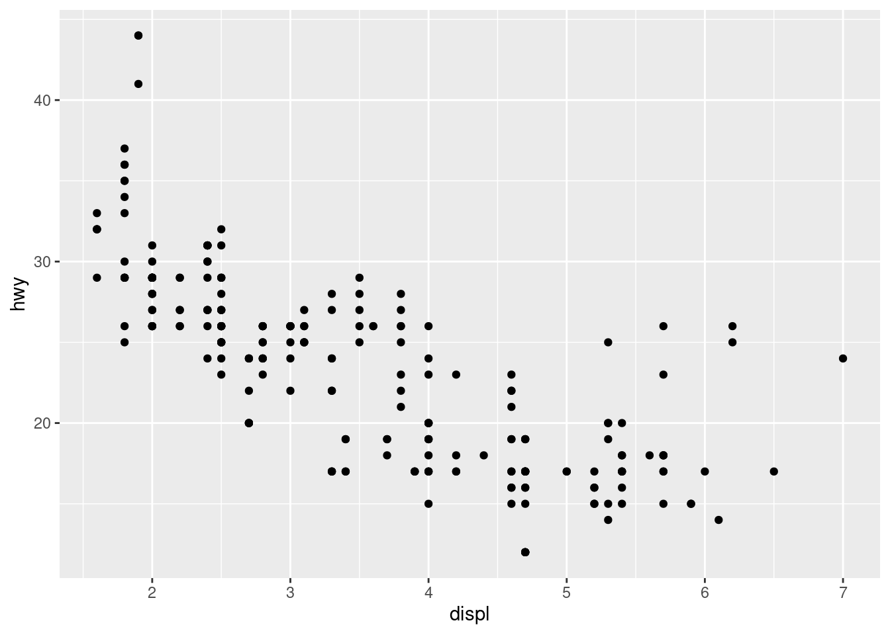
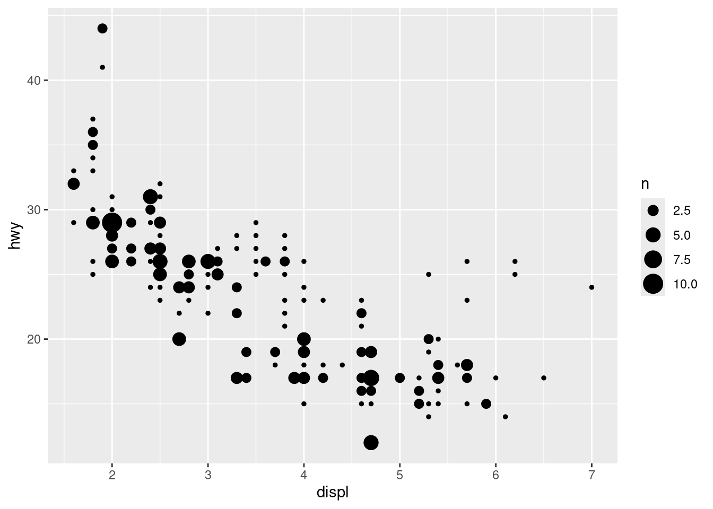
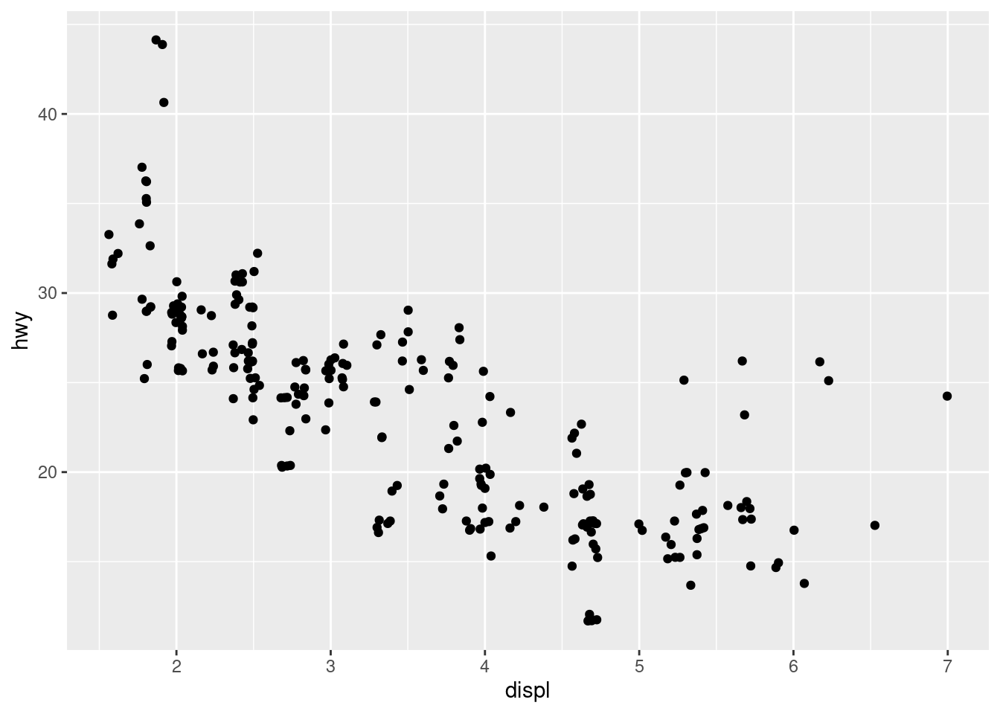
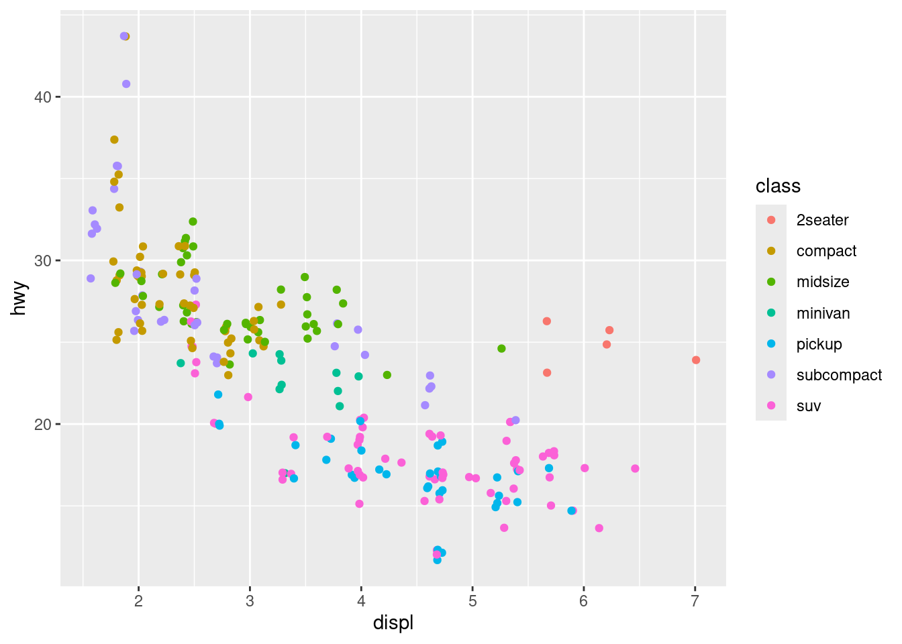
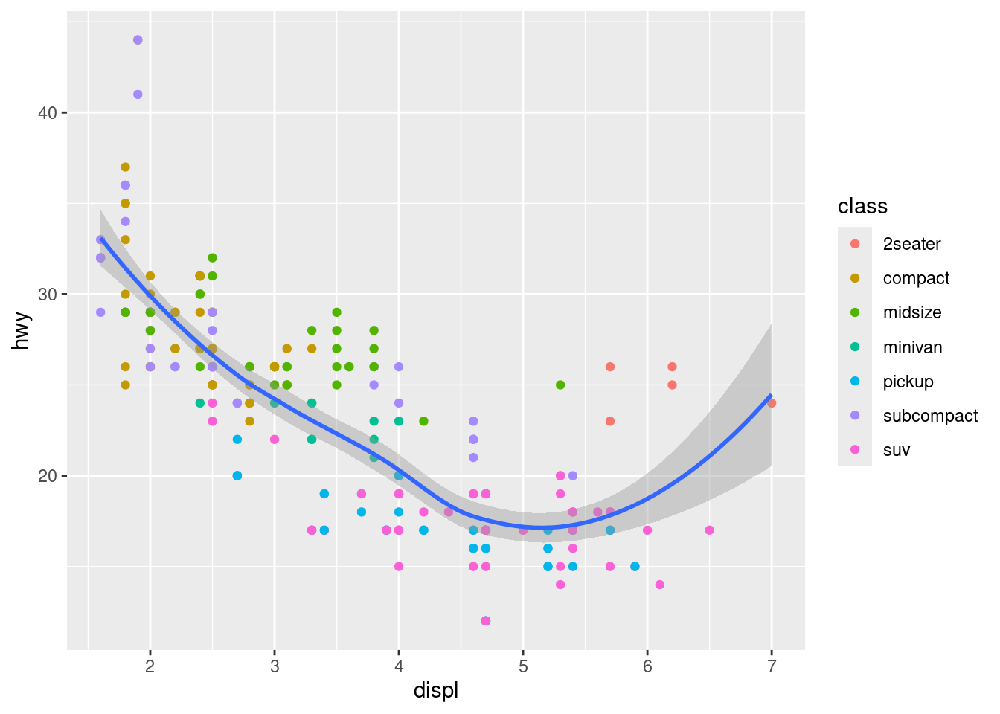
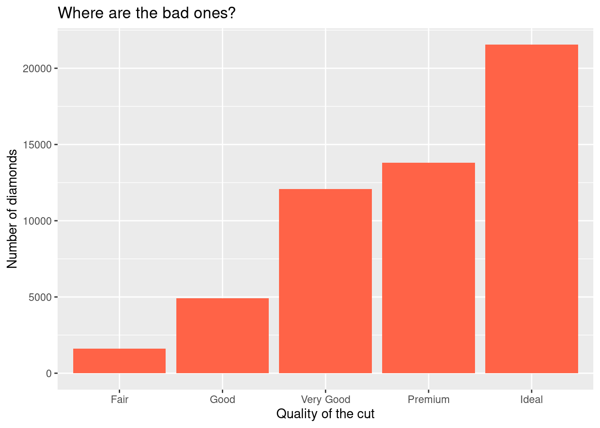
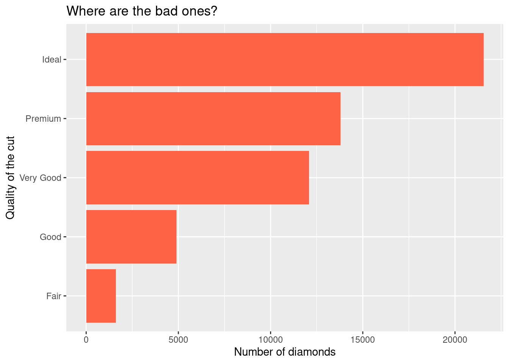

library(ggplot2)Visualisation
During this session, you will:
- Have a visualisation package installed (ggplot2)
- Learn how to explore data visually
- Learn about the 3 essential ggplot2 components
- Use different kinds of visualisations
- Layer several visualisations
- Learn how to customise a plot with colours, labels and themes.
Installing ggplot2
We first need to make sure we have the ggplot2 package available on our computer. We can use the “Install” button in the “Packages” pane, or we can execute this command in the console: install.packages("ggplot2")
You only need to install a package once, but you need to load it every time you start a new R session.
We will write ggplot2 code more comfortably in a script. Feel free to continue using the script from previous sessions, or create a new one about visualisations.
We can straight away load the package into the library by adding this command to our script and executing it:
Finding help
We are going to work with different datasets that come with the ggplot2 package. For any dataset or function doubts that you might have, don’t forget the three ways to bring up a help page:
- the command:
?functionname - the keyboard shortcut: press F1 after writing a function name
- the search box in the Help pane
Introducing ggplot2
The R package ggplot2 was developed by Hadley Wickham with the objective of creating a grammar of graphics for categorical data (in 2007). It is based on the book The Grammar of Graphics Developed by Leland Wilkinson (first edition published in 1999).
It is now part of the group of data science packages called Tidyverse.
The components of the Grammar of Graphics
The Grammar of Graphics is based on the idea that you can build every graph from the same few components.
The components are:
- Data
- Mapping
- Statistics
- Scales
- Geometries
- Facets
- Coordinates
- Theme
In this introductory session, we will mainly focus on the data, the mapping, the statistics, the geometries and the theme.
ggplot2’s three essential components
In ggplot2, the 3 main components that we usually have to provide are:
- Where the data comes from,
- the aesthetic mappings, and
- a geometry.
For our first example, let’s use the msleep dataset (from the ggplot2 package), which contains data about mammals’ sleeping patterns.
You can find out about the dataset with
?msleep.
Let’s start with specifying where the data comes from in the ggplot() function:
ggplot(data = msleep)
This is not very interesting. We need to tell ggplot2 what we want to visualise, by mapping aesthetic elements (like our axes) to variables from the data. We want to visualise how common different conservations statuses are, so let’s associate the right variable to the x axis:
ggplot(data = msleep,
mapping = aes(x = conservation))
ggplot2 has done what we asked it to do: the conservation variable is on the x axis. But nothing is shown on the plot area, because we haven’t defined how to represent the data, with a geometry_* function:
ggplot(data = msleep,
mapping = aes(x = conservation)) +
geom_bar()
Now we have a useful plot: we can see that a lot of animals in this dataset don’t have a conservation status, and that “least concern” is the next most common value.
We can see our three essential elements in the code:
- the data comes from the
msleepobject; - the variable
conservationis mapped to the aestheticx(i.e. the x axis); - the geometry is
"bar", for “bar chart”.
Here, we don’t need to specify what variable is associated to the y axis, as the “bar” geometry automatically does a count of the different values in the conservation variable. That is what statistics are applied automatically to the data.
In ggplot2, each geometry has default statistics, so we often don’t need to specify which stats we want to use. We could use a
stat_*()function instead of ageom_*()function, but most people start with the geometry (and let ggplot2 pick the default statistics that are applied).
Line plots
Let’s have a look at another dataset: the economics dataset from the US. Learn more about it with ?economics, and have a peak at its structure with:
str(economics)spc_tbl_ [574 × 6] (S3: spec_tbl_df/tbl_df/tbl/data.frame)
$ date : Date[1:574], format: "1967-07-01" "1967-08-01" ...
$ pce : num [1:574] 507 510 516 512 517 ...
$ pop : num [1:574] 198712 198911 199113 199311 199498 ...
$ psavert : num [1:574] 12.6 12.6 11.9 12.9 12.8 11.8 11.7 12.3 11.7 12.3 ...
$ uempmed : num [1:574] 4.5 4.7 4.6 4.9 4.7 4.8 5.1 4.5 4.1 4.6 ...
$ unemploy: num [1:574] 2944 2945 2958 3143 3066 ...Do you think that unemployment is stable over the years? Let’s have a look with a line plot, often used to visualise time series:
ggplot(data = economics,
mapping = aes(x = date,
y = unemploy)) +
geom_line()
Let’s go through our essential elements once more:
- The
ggplot()function initialises a ggplot object. In it, we declare the input data frame and specify the set of plot aesthetics used throughout all layers of our plot; - The
aes()function groups our mappings of aesthetics to variables; - The
geom_<...>()function specifies what geometric element we want to use.
Scatterplots
Scatterplots are often used to look at the relationship between two variables. Let’s try it with a new dataset: mpg (which stands for “miles per gallon”), a dataset about fuel efficiency of different models of cars.
?mpg
str(mpg)Do you think that big engines use fuel more efficiently than small engines?
We can focus on two variables:
displ: a car’s engine size, in litres.hwy: a car’s fuel efficiency on the highway, in miles per gallon.
For the geometry, we now have use “points”:
ggplot(data = mpg,
mapping = aes(x = displ,
y = hwy)) +
geom_point()
Notice how the points seem to be aligned on a grid? That’s because the data was rounded. If we want to better visualise the density of points, we can use the “count” geometry, which makes the dots bigger when data points have the same x and y values:
ggplot(data = mpg,
mapping = aes(x = displ,
y = hwy)) +
geom_count()
Alternatively, we can avoid overlapping of points by using the “jitter” geometry, which gives the points a little shake:
ggplot(data = mpg,
mapping = aes(x = displ,
y = hwy)) +
geom_jitter()
Even though the position of the dots does not match exactly the original x and y values, it does help visualise densities better.
The plot shows a negative relationship between engine size (displ) and fuel efficiency (hwy). In other words, cars with big engines use more fuel. Does this confirm or refute your hypothesis about fuel efficiency and engine size?
However, we can see some outliers. We need to find out more about our data.
Adding aesthetics
We can highlight the “class” factor by adding a new aesthetic:
ggplot(data = mpg,
mapping = aes(x = displ,
y = hwy,
colour = class)) +
geom_jitter()
It seems that two-seaters are more fuel efficient than other cars with a similar engine size, which can be explained by the lower weight of the car. The general trend starts to make more sense!
We now know how to create a simple scatterplot, and how to visualise extra variables. But how can we better represent a correlation?
Trend lines
A trend line can be created with the geom_smooth() function:
ggplot(mpg,
aes(x = displ,
y = hwy)) +
geom_smooth()`geom_smooth()` using method = 'loess' and formula = 'y ~ x'
We stopped using the argument names because we know in which order they appear: first the data, then the mapping of aesthetics. Let’s save ourselves some typing from now on!
The console shows you what function / formula was used to draw the trend line. This is important information, as there are countless ways to do that. To better understand what happens in the background, open the function’s help page and notice that the default value for the method argument is “NULL”. Read up on how it automatically picks a suitable method depending on the sample size, in the “Arguments” section.
Want a linear trend line instead? Add the argument method = "lm" to your function:
ggplot(mpg,
aes(x = displ,
y = hwy)) +
geom_smooth(method = "lm")
Layering
A trend line is usually displayed on top of the scatterplot. How can we combine several layers? We can string them with the + operator:
ggplot(mpg,
aes(x = displ,
y = hwy)) +
geom_point() +
geom_smooth()
The order of the functions matters: the points will be drawn before the trend line, which is probably what you’re after.
The colour aesthetic
We can once again add some information to our visualisation by mapping the class variable to the colour aesthetic:
ggplot(mpg,
aes(x = displ,
y = hwy)) +
geom_point(aes(colour = class)) +
geom_smooth()
Challenge 1 – where should aesthetics be defined?
Take the last plot we created:
ggplot(mpg,
aes(x = displ,
y = hwy)) +
geom_point(aes(colour = class)) +
geom_smooth()What would happen if you moved the colour = class aesthetic from the geometry function to the ggplot() call?
Different geometries can also have their own mappings that overwrite the defaults. If you place mappings in a geom_* function, ggplot2 will treat them as local mappings for the layer. It will use these mappings to extend or overwrite the global mappings for that layer only. This makes it possible to display different aesthetics in different layers.
Saving a plot
Like your visualisation? You can export it with the “Export” menu in the “Plots” pane.
- Building a document or a slideshow? You can copy it straight to your clipboard, and paste it into it.
- A PDF is a good, quick option to export an easily shareable file with vector graphics. Try for example the “A5” size, the “Landscape” orientation, and save it into your “plots” directory.
- More options are available in the “Save as image…” option. PNG is a good compressed format for graphics, but if you want to further customise your visualisation in a different program, use SVG or EPS, which are vector formats. (Try to open an SVG file in Inkscape for example.)
To save the last plot with a command, you can use the ggsave() function:
ggsave(filename = "plots/fuel_efficiency.png")This is great to automate the export process for each plot in your script, but ggsave() also has extra options, like setting the DPI, which is useful for getting the right resolution for a specific use. For example, to export a plot for your presentation:
ggsave(filename = "plots/fuel_efficiency.png", dpi = "screen")Saving a .svg file with requires installing the svglite package. This packages seems so work best installing in a fresh R session (Session > Restart R) from source
install.packages("svglite", type = "source"). Then load the librarylibrary(svglite)rerun your code including loading previous libraries (ggplot2etc.) and now saving a plot with a .svg extension should work!
Challenge 2 – add a variable and a smooth line
Let’s use a similar approach to what we did with the mpg dataset.
Take our previous unemployment visualisation, but represented with points this time:
ggplot(economics,
aes(x = date,
y = unemploy)) +
geom_point()How could we:
- Add a smooth line for the number of unemployed people. Are there any interesting arguments that could make the smoother more useful?
- Colour the points according to the median duration of unemployment (see
?economics)
ggplot(economics,
aes(x = date,
y = unemploy)) +
geom_point(aes(colour = uempmed)) +
geom_smooth()
See how the legend changes depending on the type of data mapped to the
colouraesthetic? (i.e. categorical vs continuous)
This default “trend line” is not particularly useful. We could make it follow the data more closely by using the span argument. The closer to 0, the closer to the data the smoother will be:
ggplot(economics,
aes(x = date,
y = unemploy)) +
geom_point(aes(colour = uempmed)) +
geom_smooth(span = 0.1)
You can now see why this is called a “smoother”: we can fit a smooth curve to data that varies a lot.
To further refine our visualisation, we could visualise the unemployment rate rather than the number of unemployed people, by calculating it straight into our code:
ggplot(economics,
aes(x = date,
y = unemploy / pop)) +
geom_point(aes(colour = uempmed)) +
geom_smooth(span = 0.1)
The early 1980s recession now seems to have had a more significant impact on unemployment than the Global Financial Crisis of 2007-2008.
Bar charts and ordered factors
Let’s use the diamonds dataset now. The diamonds dataset comes with ggplot2 and contains information about ~54,000 diamonds, including the price, carat, colour, clarity, and cut quality of each diamond.
Let’s have a look at the data:
diamonds
summary(diamonds)
?diamondsBack to bar charts. Consider a basic bar chart, as drawn with geom_bar(). The following chart displays the total number of diamonds in the diamonds dataset, grouped by cut:
ggplot(diamonds,
aes(x = cut)) +
geom_bar()
The chart shows that more diamonds are available with high quality cuts than with low quality cuts.
cut is an ordered factor, which you can confirm by printing it to the console:
head(diamonds$cut)[1] Ideal Premium Good Premium Good Very Good
Levels: Fair < Good < Very Good < Premium < IdealSee how ggplot2 respects that order in the bar chart?
Customising a plot
Let’s see how we can customise our bar chart’s look.
Change a geometry’s default colour
First, we can pick our favourite colour in geom_bar():
ggplot(diamonds,
aes(x = cut)) +
geom_bar(fill = "tomato")
If you are curious about what colour names exist in R, you can use the colours() function. Alernatively, you can use any hex value like “#760daa”.
Change labels
We can also modify labels with the labs() function to make our plot more self-explanatory:
ggplot(diamonds,
aes(x = cut)) +
geom_bar(fill = "tomato") +
labs(title = "Where are the bad ones?",
x = "Quality of the cut",
y = "Number of diamonds")
Let’s have a look at what labs() can do:
?labsIt can edit the title, the subtitle, the x and y axes labels, and the caption.
Remember that captions and titles are better sorted out in the publication itself, especially for accessibility reasons (e.g. to help with screen readers).
Horizontal bar charts
For a horizontal bar chart, we can map the cut variable to the y aesthetic instead of x. But remember to also change your labels around!
ggplot(diamonds,
aes(y = cut)) + # switch here...
geom_bar(fill = "tomato") +
labs(title = "Where are the bad ones?",
y = "Quality of the cut", # ...but also here!
x = "Number of diamonds") # ...and here!
This is particularly helpful when long category names overlap under the x axis.
Built-in themes
The theme() function allows us to really get into the details of our plot’s look, but some theme_*() functions make it easy to apply a built-in theme, like theme_bw():
ggplot(diamonds,
aes(y = cut)) +
geom_bar(fill = "tomato") +
labs(title = "Where are the bad ones?",
y = "Quality of the cut",
x = "Number of diamonds") +
theme_bw()
Try theme_minimal() as well, and if you want more options, install the ggthemes package!
Interactive visualisations
Plotly is a package that allows creating interactive visualisation. A nifty aspect of it is that it can directly convert most static ggplot2 visualisations to interactive HTML visualisations.
After installing the package, you can convert our mpg visualisation by saving it as an object, and passing it to the ggplotly() function:
static_plot <- ggplot(mpg,
aes(x = displ,
y = hwy)) +
geom_jitter(aes(colour = class)) +
geom_smooth()
library(plotly)
ggplotly(static_plot)We can now use our mouse to hover over points and see the associated data, turn series off and on, and draw rectangles to zoom in.
This kind of visualisation is a good way to expose extra data through the tooltips. For example, associating the “manufacturer” and “model” variables to “label” aesthetics in the ggplot2 command won’t show that information on the static visualisation (unless labelling geometry is used), but it will be included in the plotly tooltip:
static_plot <- ggplot(mpg,
aes(x = displ,
y = hwy)) +
geom_jitter(aes(colour = class,
label = manufacturer,
label2 = model)) +
geom_smooth()
library(plotly)
ggplotly(static_plot)Further resources
- ggplot2 cheatsheet
- Official ggplot2 documentation
- Official ggplot2 website
- Chapter on data visualisation in the book R for Data Science
- From Data to Viz, a website to explore different visualisations and the code that generates them
- Selva Prabhakaran’s r-statistics.co section on ggplot2
- Coding Club’s data visualisation tutorial
- STHDA’s ggplot2 essentials
- Lear more about plotly and exploratory data analysis with the book Interactive web-based data visualization with R, plotly, and shiny